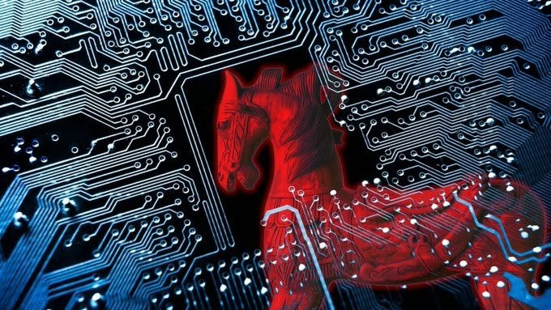

المقدمة
الفيروسات الحاسوبية هي برامج صغيرة خبيثة صُممت خصيصًا لإحداث الضرر في الأنظمة الحاسوبية. بدأت هذه الفيروسات كأدوات بسيطة لكنها تطورت بمرور الوقت لتصبح تهديدات معقدة يمكنها سرقة المعلومات، التحكم عن بُعد في الأجهزة، وحتى تعطيل الأنظمة بالكامل. في هذا المقال، سنتناول أبرز أنواع الفيروسات، أضرارها، وكيفية الوقاية منها.
أنواع الفيروسات
تتعدد أنواع الفيروسات حسب الطريقة التي تعمل بها، وأبرزها:
- الفيروسات التقليدية: تصيب الملفات وتُدمج داخل برامج شرعية، وغالبًا ما يتم نقلها عبر وسائط التخزين القابلة للإزالة أو الإنترنت. هذه الفيروسات تعمل عن طريق استبدال شيفرة البرمجة الأساسية للملفات بالفيروس، مما يتيح لها الانتشار بسهولة عندما يتم نقل الملفات المصابة إلى أجهزة أخرى.
- فيروسات الفدية: تقوم بتشفير ملفات المستخدمين وتطلب فدية مالية لفك التشفير. تصيب هذه الفيروسات الجهاز عادةً عبر التنزيلات الضارة أو مرفقات البريد الإلكتروني المشبوهة. بمجرد دخولها إلى الجهاز، تبدأ في تشفير الملفات الهامة للمستخدم، وتجعلها غير قابلة للوصول إلا بعد دفع الفدية المطلوبة.
- الدودات: تنتشر عبر الشبكات وتصيب العديد من الأجهزة دون تدخل من المستخدم، مما يجعلها من أخطر أنواع الفيروسات التي يمكن أن تعطل شبكات كاملة. تعمل الدودات عن طريق استغلال الثغرات الأمنية في البرمجيات والشبكات، وتقوم بالنسخ الذاتي لتنتشر إلى أجهزة أخرى.
- أحصنة طروادة: تتنكر كبرامج مفيدة لكنها تنفذ أوامر ضارة في الخلفية، مثل سرقة البيانات أو فتح أبواب خلفية للمهاجمين. غالبًا ما تكون هذه البرامج مغرية للمستخدمين لتحميلها، حيث تقدم كوظائف مفيدة أو ألعاب، ولكنها تقوم بتنفيذ عمليات خفية ضارة بعد التثبيت.

مضار الفيروسات
وجود الفيروسات في الحاسبات يؤدي إلى عدة مضار تشمل:
- تدمير البيانات: يمكن للفيروسات حذف أو تشفير الملفات الهامة، مما يؤدي إلى فقدان معلومات قيمة قد تكون ضرورية للعمل أو الحياة الشخصية.
- سرقة البيانات الشخصية: بعض الفيروسات تجمع معلومات حساسة مثل كلمات المرور ومعلومات الحسابات البنكية، مما يعرض المستخدمين لخطر الاحتيال المالي.
- إبطاء أداء الحاسب: الفيروسات يمكن أن تستهلك موارد النظام، مما يؤدي إلى بطء عام في الأداء وصعوبة في استخدام الحاسب بشكل طبيعي.
- نشر العدوى: يمكن للفيروسات الانتقال من حاسب مصاب إلى أجهزة أخرى في نفس الشبكة، مما يزيد من نطاق الضرر ويصعب من عملية السيطرة على العدوى.
طرق الانتشار
تنتقل الفيروسات بطرق عديدة منها:
- الرسائل الإلكترونية التي تحتوي على مرفقات ضارة.
- تنزيل التطبيقات من مصادر غير موثوقة.
- وسائط التخزين القابلة للإزالة: استخدام أقراص USB أو أجهزة تخزين خارجية مصابة.
- الشبكات اللاسلكية: الاتصال بشبكات واي فاي غير آمنة يمكن أن يسمح بانتقال الفيروسات.
- التطبيقات المزيفة: تنزيل تطبيقات من مصادر غير رسمية يمكن أن يكون مصدراً للفيروسات.
الحماية من الفيروسات
لحماية حاسبك من الفيروسات، يجب اتباع بعض الإجراءات الوقائية:
- استخدام برامج مكافحة الفيروسات وتحديثها بانتظام لضمان فعالية الحماية.
- تجنب تحميل البرامج أو الملفات من مصادر غير موثوقة والتحقق من المصداقية قبل التنزيل.
- عدم فتح المرفقات المشبوهة في رسائل البريد الإلكتروني التي قد تكون غير متوقعة أو من مرسلين غير معروفين.
- تحديث نظام التشغيل والبرامج بانتظام لسد الثغرات الأمنية التي يمكن أن تستغلها الفيروسات.
- استخدام جدار ناري لحماية الشبكة من الهجمات الخارجية ومنع انتشار الفيروسات داخل الشبكة.
- النسخ الاحتياطي المنتظم للبيانات الهامة لضمان إمكانية استعادتها في حالة تلفها بسبب الفيروسات.
- التوعية والتدريب على الأمن السيبراني لزيادة الوعي بمخاطر الفيروسات وكيفية الوقاية منها.
أمثلة على الفيروسات الشهيرة
هناك العديد من الفيروسات الشهيرة التي تسببت في أضرار كبيرة حول العالم. ومن بينها:
- فيروس "ميليسا" (1999): كان ينتشر عبر البريد الإلكتروني ويقوم بإرسال نفسه إلى الأشخاص في دفتر عناوين الضحية.
- فيروس "ILOVEYOU" (2000): أصاب ملايين الأجهزة حول العالم وأدى إلى خسائر بمليارات الدولارات.
- فيروس "WannaCry" (2017): كان من نوع فيروس الفدية وانتشر بشكل واسع وأثر على العديد من المؤسسات.